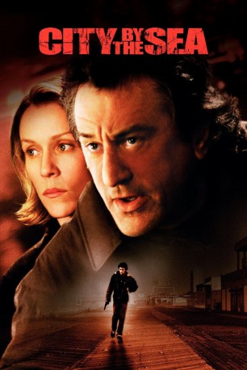
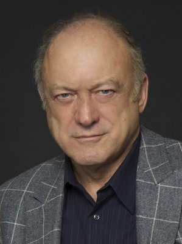
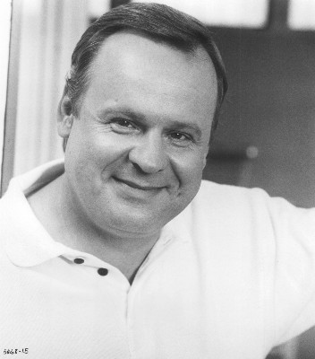

#8366 City By The Sea
 
 IMDB-Wertung: 6.1 / 10
IMDB-Wertung: 6.1 / 10  Tomatometer: 47
Tomatometer: 47  Metascore: 0
Metascore: 0 
Nachdem der Polizist Vincent LaMarca seine Familie schon vor Jahren verlassen hat, lebt er nur noch für seinen Job. Doch die Vergangenheit holt ihn wieder ein, als sein drogenabhängiger Sohn Joey beschuldigt wird, einen Drogendealer ermordet zu haben. Die Beweise sprechen gegen Joey, doch der ist untergetaucht. Vincent und sein Partner Reg machen sich auf die Suche nach ihm...
Jahr: 2002
Dauer: 103 Minuten
FSK: 12
Land: USA Studio: Warner Bros.Tonspuren: DD5.1 - ,
Untertitel:
Auflösung: 1080p (1920x808) Größe: 3686 MB
Genre: Thriller, Drama, Krimi, Mystery
Regisseur: Michael Caton-Jones
Drehbuch: Mike McAlary
Soundtrack: John Murphy
Darsteller:
 Robert De Niro als Vincent LaMarca
Robert De Niro als Vincent LaMarca- Frances McDormand als Michelle
 James Franco als Joey
James Franco als Joey- Eliza Dushku als Gina
- William Forsythe als Spyder
 Patti LuPone als Maggie
Patti LuPone als Maggie- Anson Mount als Dave Simon
-  John Doman als Henderson
 Brian Tarantina als Snake
Brian Tarantina als Snake Drena De Niro als Vanessa Hansen
Drena De Niro als Vanessa Hansen Nestor Serrano als Rossi
Nestor Serrano als Rossi Matthew Cowles als Arnie
Matthew Cowles als Arnie Linda Emond als Margery
Linda Emond als Margery- Cyrus Farmer als Carl
-  George Dzundza als Reg Duffy
 Leo Burmester als Lieutenant Katt
Leo Burmester als Lieutenant Katt Gregg Edelman als A.P.C. Johnson
Gregg Edelman als A.P.C. Johnson- Orlando Pabotoy als Will
- Leslie Cohen als Jean
- Stephi Lineburg als Bree
- Mark La Mura als Mayor Jackson
- Joanne Lamstein als Screaming Teenager
- Michael Caton-Jones als Man in Subway Train (uncredited)
 Ty Copeman als Car and Driver (uncredited)
Ty Copeman als Car and Driver (uncredited)- Angel Feliciano als Tom (uncredited)
- Rodney Holland als Spyder's Main Drug Dealer (uncredited)
- Pete Macnamara als Uniform Cop (uncredited)
 Riley G. Matthews Jr. als Detective with Megaphone (uncredited)
Riley G. Matthews Jr. als Detective with Megaphone (uncredited)- Michael P. Moran als Herb
- Jay Boryea als Picasso
- Jason Winther als Jason
- Michelle Daimer als Terry
- Jill Marie Lawrence als Evelyn
- Teresa Kelsey als Reporter Laura
- Teresa Woods als Reporter Carol
- Michael Della Femina als Angelo LaMarca
- Jim Marcus als Medical Examiner
- Dominick Angelo Cangro als Baby Angelo
- Pasquale Enrico Cangro als Baby Angelo
- Jonah Falcon als Fast Food Employee (uncredited)
- Chris Huvane als Uniform Cop (uncredited)
- Christopher Jumper als Young Vincent LaMarca (uncredited)
Datei: X:\2002\City By The Sea (2002, FSK12, 1920x808).mkv seit 28.02.2018
Festplatte: HD 1996-2002
 Es gibt insgesamt 93 Filme in der Gruppe '2002'
Es gibt insgesamt 93 Filme in der Gruppe '2002'